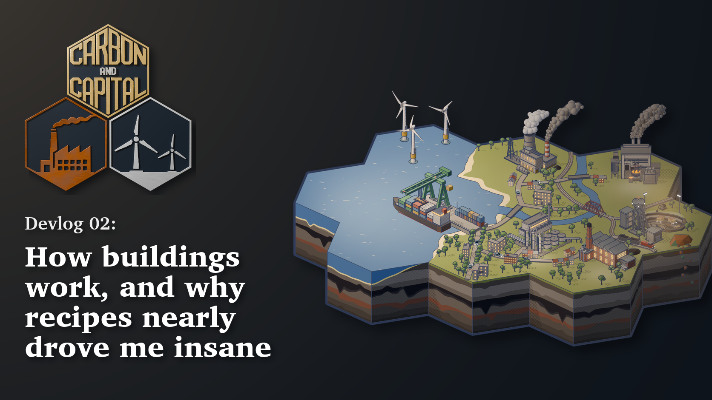
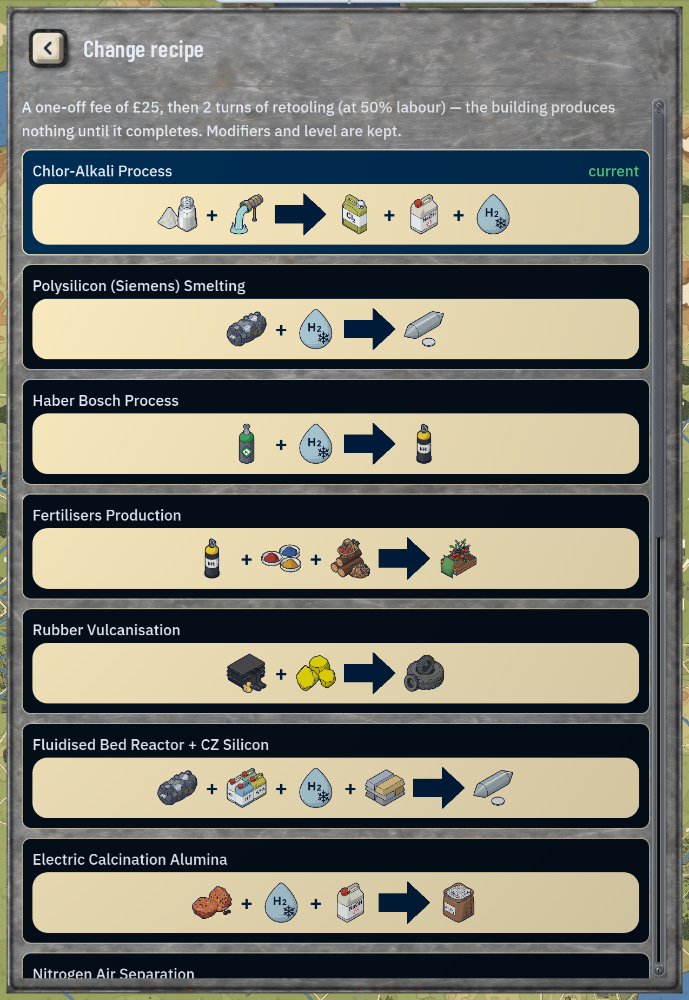
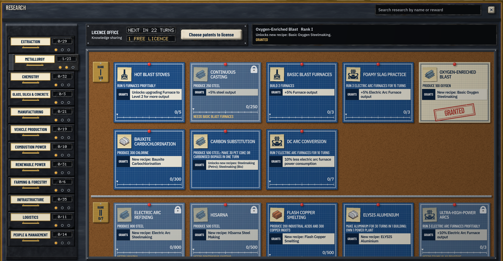

· Devlog 02
How buildings work, and why recipes nearly drove me insane
Recipes ended up carrying almost everything that used to live on buildings. Here is how that happened, and what it cost.
Last time I wrote about roads and the cost solver. This one is about the thing the cost solver spends most of its time chewing on: recipes, and how they ended up carrying almost everything that used to live on buildings. (And also driving me insane when first balancing the game)
Two ways to do buildings
There are two approaches I’ve seen in tycoon and economic sims.
- Each building does one job. This is the Anno approach (I have many hours in Anno 1800). Once you pick a building, that’s it, so a cannon factory makes cannons. Progression is about unlocking the buildings.
- Buildings are shared and you swap what they do. A factory can make screws, beams, wire or some complex part interchangeably and there may be a retooling cost, but the puzzle becomes unlocking more production methods rather than more buildings. Progression is about unlocking production methods.
Carbon and Capital uses the second. The idea that sparked the whole game was “what if you didn’t have to unlock the entire chain to build complex parts?” I wanted a world where you can build wind turbines on turn 1 and buy whatever you can’t make yet. That only works if a building can be pointed at a recipe, and it is the same idea as the MAKE OR BUY loop I went on about last time.
In Carbon and Capital, switching a building to a new recipe costs some time. Upgrading also costs construction materials depending on the building. You are basically changing the layout of the building, so it is not free. It also couldn’t be free for a gameplay reason: upgraded recipes are often, if not always, a good thing, so a free swap would be a free lunch. When they aren’t straight upgrades, they unlock different strategies such as rare earth-free recipes. There are some ways to make the switch or upgrade smoother, which I’ll leave for you to find.
What’s in a name, ahem… I mean recipe
When I started, a recipe was barely anything: what it took in, what it put out and how much power it used. Over time I kept adding properties to recipes rather than to buildings. Recipe names came first, which sounds trivial but did a lot for the lore (and gave me a lot of research to figure out the difference between Aluminium Carbothermic Reduction and Aluminum Carbochlorination). Pollution went on recipes because a furnace making glass does not pollute like a furnace burning coal for iron ingots.
Today a building only holds its construction and upgrade costs, maintenance, name, size and art. Everything else is the recipe: inputs, outputs, power, pollution, labour split into unskilled, skilled and highly skilled, and whether you have to unlock it first. You build a chemical plant, assign it the Chlor Alkali recipe, and all of that comes out of the recipe.

The balancing wall
Getting here took about twelve balancing passes. It is technically still not finished, just settled. For most of those passes, labour cost lived on the building, and that is what made the whole thing impossible to balance.
Here’s why. A building’s labour bill was one number. Put a cheap recipe and an expensive recipe in the same building and you either made the cheap one a loss or the expensive one a goldmine. There was no setting that made both work, never mind different prices for different goods, labour costs that at least approached credibility, or recipes that stayed profitable until you built too far from a port.
My target for a decent early game recipe was slightly profitable at £20 profit a turn so transport and other costs could drive real decisions. While balancing I had accidentally created one version where a single aluminium furnace upgraded to L3 could make +£600 per turn profit, while several buildings producing rubber, then tyres, car bodies, engines and then cars could only squeeze out +£400 despite being the more integrated chain. I wanted the game to reward this kind of integration, so I had to do better. As soon as I realised this was happening (this was before I had end to end tests to catch these kinds of mistakes) I put my head in my hands and went on to rebalance the recipes for the tenth time.
If you ever want to sink a few dozen hours on spreadsheets and achieve nothing, I highly recommend rebalancing blindly. 10/10 would do again.
Several months ago (around that 10th balancing round), I moved labour cost onto recipes. Buildings got simpler, recipes got richer, and I had finally achieved balance.
What recipes buy you
When I set out I wanted an industrially realistic chain, but not so complex that only the most die hard chemical and industrial fans would play it. Tricky balance. Even trickier once I decided to only add a good or a recipe if it created a genuine decision for the player.
So the demo has 73 goods, from industrial tycoon stalwarts like steel and coal all the way to hydraulic components, large vehicles, industrial acids and CPUs. Each recipe tries to set a puzzle or reward you for solving one. This is why the game loop is centred on advancing within an industry rather than climbing a tech tree from coal to CPUs and electric cars.
Roughly a third of recipes have to be earned by doing. Run a furnace long enough and your workers and researchers figure out how to make steel more efficiently and boom, you unlock Basic Oxygen Steelmaking, which is more profitable than regular Steelmaking.

Some unlocks are more generous than that, but push you into more complex chains if you want to master them. Basic Oxygen Steelmaking drops coal as an input and wants oxygen instead, which has its own quirks, like being a liquid in game.
(Please don’t make me change it back to a gas.)
Other recipes are more profitable but run in a different building than the one you started with. Industrial Goods Factories give way to Assembly Plants and then High Tech Manufactories. Some goods have a recipe in all three. Hint: the High Tech stuff is usually better.
All in all, recipes have turned out to be pretty versatile. If they need rebalancing in future, that should be manageable (he says, dooming himself) and they add a bit of depth that buildings alone never did.
Next time
The next devlog is about transport and how it works in game. Probably next month.
The free demo is here: carbonandcapital.itch.io/carbon-and-capital
If you play, I’d like to know which recipe you unlocked first and whether it changed what you built next. Follow the page on itch.io for updates as the demo receives fixes, and thank you to everyone who has downloaded it and sent feedback so far.